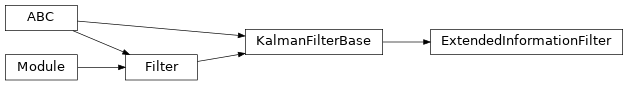

torchfilter.filters._extended_information_filter¶
Private module; avoid importing from directly.
Module Contents¶
Classes¶
Information form of a Kalman filter; generally equivalent to an EKF but |
-
class
torchfilter.filters._extended_information_filter.ExtendedInformationFilter(*, dynamics_model: DynamicsModel, measurement_model: KalmanFilterMeasurementModel)[source]¶ Bases:
torchfilter.base.KalmanFilterBaseInformation form of a Kalman filter; generally equivalent to an EKF but internally parameterizes uncertainties with the inverse covariance matrix.
For building estimators with more complex observation spaces (eg images), see
VirtualSensorExtendedInformationFilter.-
information_vector:torch.Tensor¶ Information vector of our posterior; shape should be
(N, state_dim).- Type
torch.Tensor
-
information_matrix:torch.Tensor¶ Information matrix of our posterior; shape should be
(N, state_dim, state_dim).- Type
torch.Tensor
-
property
belief_covariance(self) → types.CovarianceTorch¶ Posterior covariance. Shape should be
(N, state_dim, state_dim).
-